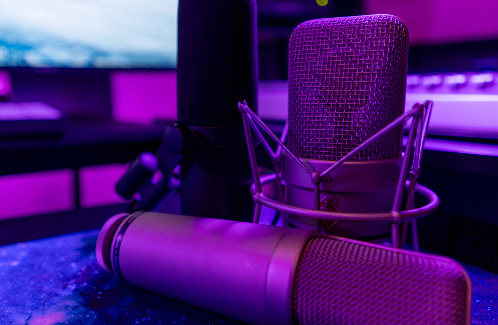
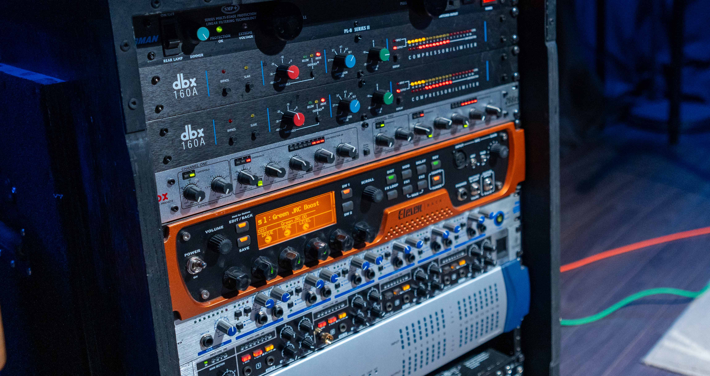

At Night Sparrow Productions, we know that great audio is the foundation of impactful media. With over 15 years of experience in audio production and mastering, we specialize in delivering professional-grade sound for videos, podcasts, and live recordings. Our studio is equipped with high-end preamps, compressors, and a diverse selection of microphones; ranging from studio condensers to dynamic and lavalier mics. We have the perfect microphone to suit any vocal style or recording need!
Our Services01
Audio Processing
Night Production has been entrusted with creative projects by many of North America’s premier agencies, and others around the world. By leveraging our four studios and our network of talent across Canada, we are able to fulfill the vision and production challenges that creative leaders need to serve their clients.
Whether we work alongside our agency partners or independently, we build our team accordingly to best deliver excellence, value, and exceptional service.
02
Equipped for Every Need
Most of our work is done for, and in close collaboration with the marketing and communication teams of companies or government bodies.
By listening first, we seek to build a relationship where we serve your marketing and brand strategy from the onset of the creative development process. We regularly work hand-in-glove with internal teams, building visual assets that serve brands and organizations for years.
03
Cutting-Edge Camera Technology
Behind every great story is a camera capable of capturing it in stunning detail. Our production team utilizes the latest in camera technology to deliver exceptional image quality, from 4K resolution to advanced stabilization. Whether you're shooting dynamic action scenes or intimate interviews, we have the tools to ensure every shot exceeds expectations. Let us help you turn your concept into a cinematic masterpiece that resonates with your audience.

WINS
Voiceovers and Dialogue Replacement
From narration for promotional videos to dubbing and ADR (Automated Dialogue Replacement), we deliver voiceovers that captivate your audience. Using professional-grade microphones and precise editing, we ensure every word resonates with clarity and emotion.
WINS
Podcast Recording and Mastering
We offer a complete podcast production package, providing everything you need for a professional result. From recording, whether in-studio or remote, with high-quality equipment to ensure exceptional sound, to meticulous editing that removes unwanted noise, adjusts levels, and adds intros and outros for a seamless listening experience, we’ve got you covered. We also include mastering to polish your podcast to meet professional audio standards, ensuring it’s ready for all streaming platforms.

Pro Audio for Video
Test
Great visuals deserve equally great sound, and we specialize in recording and mastering audio to complement your projects. Whether it’s talking head videos for YouTube, corporate presentations, or interviews, we ensure every word is clear and engaging. For live events or outdoor shoots, our on-location recording captures crisp sound using portable audio solutions. We also offer custom sound design, adding sound effects, ambient noise, and music to enhance the emotional impact of your video.